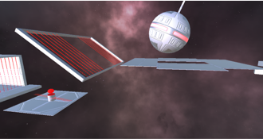
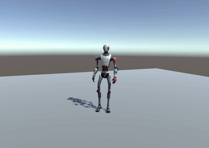
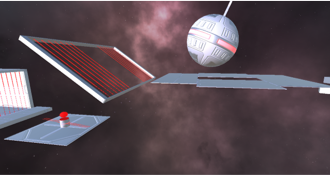
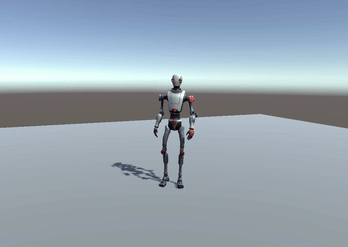

Robo Platformer
3D Platformer with different obstacles and levels
About
Robo Platformer is a 3D platformer set in space where players control a robot navigating through a series of obstacles using simple movement controls like jumping. Ragdoll physics is incorporated into the game mechanics to add an extra layer of challenge for players. We drew inspiration for this game, especially for the ragdoll physics, from the game ALTF4 by PUMPKIM.
To make the game more engaging, we designed two different levels with different difficulties. The first level serves as an introduction and tutorial, while the second level is a more challenging experience that requires precise timing and coordination to navigate through obstacles.
This game was developed as a part of our Game Engines course at HTW-Berlin, where we were tasked with creating a game using Unity and exploring various 3D options.
My Work
During the development process of "Robo Plattformer", I was responsible for several important aspects of the game. First, I focused on implementing the player controls, ensuring that the robot moved in a fluid and responsive manner. This involved programming the basic movement controls, such as jumping and running, as well as fine-tuning the physics and collision detection to ensure that the robot could navigate the various obstacles smoothly.
In addition to the player controls, I also worked on implementing the game's animations. This included creating unique animations for the various actions the robot could perform, such as jumping and colliding with obstacles. I also worked on fine-tuning the animations to ensure that they were smooth and realistic, and that they matched the overall aesthetic of the game.
Another key area I worked on was the game's UI. This involved designing and implementing the various menus and interface elements that the player would interact with throughout the game. This included the main menu, level selection screen, and in-game pause menu. I focused on creating a clean, intuitive UI that was easy to use and complemented the overall aesthetic of the game.
Finally, I also contributed to the game's sound design. This involved creating and implementing various sound effects throughout the game.
 


